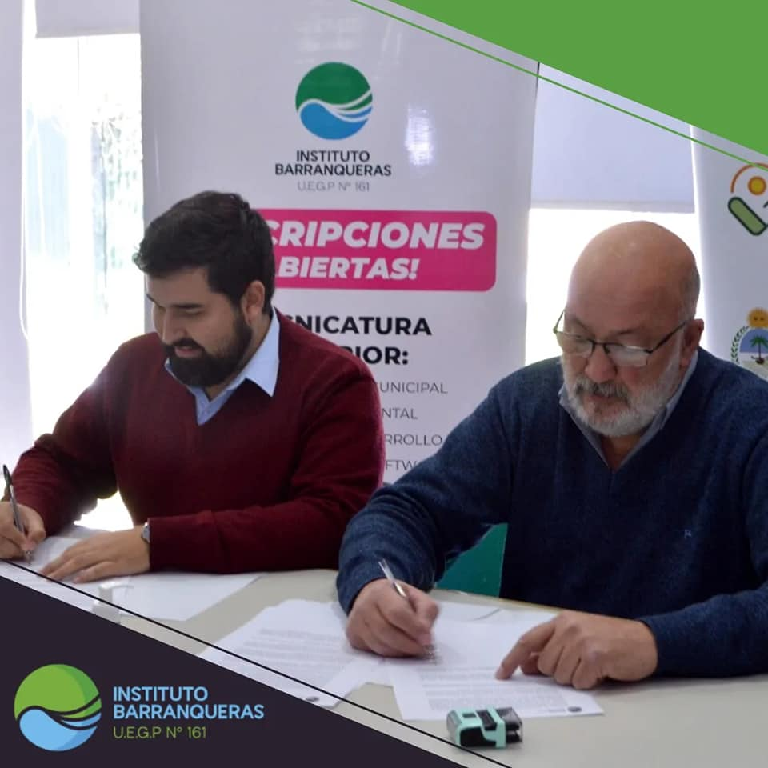
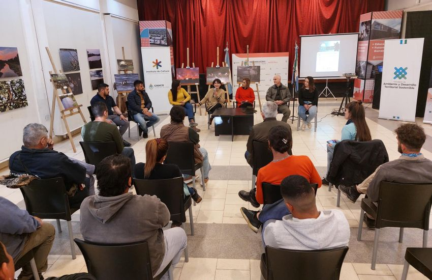

Convenios
 Actividades
Inscripciones
Actividades
Inscripciones
09 Ago 2022
El instituto Barranqueras y el Instituto de Agricultura Familiar Popular firman convenio
Actividades
13 Ago 2022
Continúa la Muestra Fotográfica "Vivir en Humedales" en Barranqueras
16 Feb 2022
El Instituto Barranqueras mantiene abierta la inscripción para el Ciclo Lectivo 2022
Noticias Populares
01
16 Feb 2022
El Instituto Barranqueras mantiene abierta la inscripción para el Ciclo Lectivo 2022
02

08 Nov 2020
Magda Ayala participó del 4° Foro de Desarrollo Sustentable
03

13 Ago 2022
Continúa la Muestra Fotográfica "Vivir en Humedales" en Barranqueras
04

14 Ago 2022
Otra noticia
05

14 Ago 2022